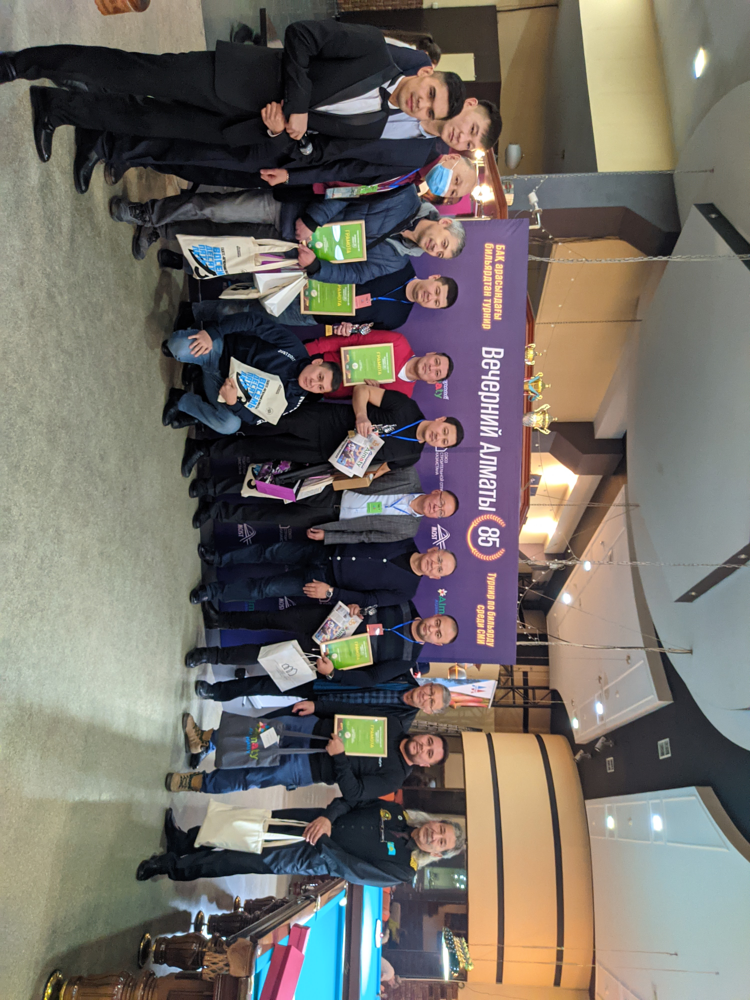
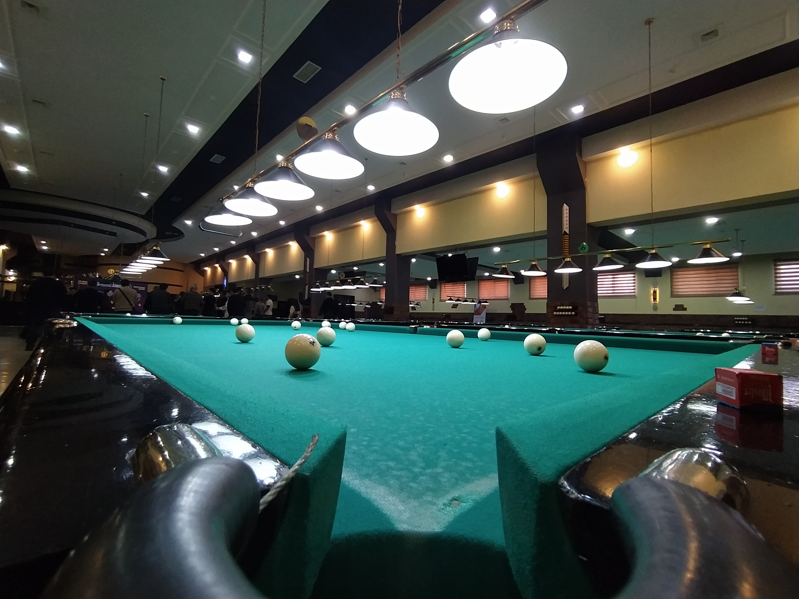

|  |
Организатором турнира является Медиахолдинг "Alatau Aqparaty" при поддержке спонсоров ОЮЛ "Строительной отрасли Казахстана".
Как отмечает один из организаторов турнира, коммерческий директор Медиахолдинга "Alatau Aqparaty": "Вы знаете, был ковидный год, мы давно не виделись. Многие друг друга знают, почти все. Не было общения. И вот мы ради что сегодня столько наших коллег собралось - это и газетчики, и телевизионщики, это и представители информационных агенств - сегодня собрались в этот праздник. Мы уверены что турнир пройдет на ура".
В турнире принимали участие 32 команды, представлявшие разные организации СМИ, такие как АО "Первый канал Евразия", Газета "Караван", Портал "Матрица.кз" и др.
Победителем турнира по итогу непростой борьбы стал Меймеш Умбетали, АО "Первый Канал Евразия". Второе место занял заместитель генерального директора Медиахолдинга Alatau Aqparaty Шинтаев Нуржан. А третее место досталось главному оператору телеканала "Алматы" Алмасхану Муратбеку.
Участики турнира отметили веселую атмосферу, хорошую организацию турнира. По окончании турнира были вручены поощрительные призы участникам, а также вручены подарки с символикой газеты и грамоты спонсорам турнира.
|  |
Фото предоставлены независимым фотографом Дюскалиевым Бахтияром.